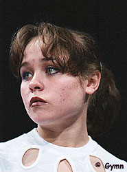

Irina Yevdokimova (KAZ)
1998 Asian Games AA Silver Medalist
 |
Irina was born on August 14, 1978 in Alma-Ata. She was one of the first female gymnasts to perform a layout front vault.
Competition Results
1993
World Championships: 40th AA (prelims), 7th FX
1994
Asian Games: 7th AA, 3rd B, 3rd FX
Puerto Rico Cup: 7th AA
World Championships (Brisbane): 35th AA
1995
Puerto Rico Cup: 1st AA, 1st FX
World Championships: 36th AA
1996
1997
Cottbus International: 3rd FX
World Championships: 17th AA
World Stars: 6th UB
1998
American Cup:
Asian Games: 2nd AA, 3rd V, 3rd FX, 4th B
Cottbus International: 3rd UB, 7th V
Glasgow Grand Prix: 4th UB, 5th FX, 6th V
KAZ Championships: 1st AA
Nelli Kim Cup: 1st AA
1999
Glasgow Grand Prix: 7th V
Samboo International Cup: 9th UB
World Championships: 30th Team, 36th AA
Zurich Grand Prix: 6th V
This page was created on January 27, 2000 and was
last updated on May 31, 2000.
© Gymn Forum